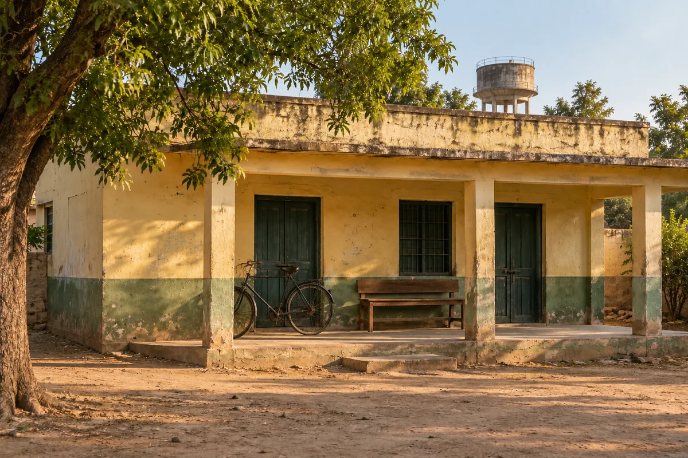

I
ISHIRTS & EVERYDAY LAYERS
Phulera days
Easy mornings. Familiar corners. A little Phulera.
Explore collectionA LITTLE BIT OF PHULERA
The warmth of Phulera. The work of village artisans. Clothing for the everyday stories we call our own.
Explore our collections Step into our story
FROM SCREEN TO EVERYDAY
A village office. A cup of tea. Conversations that turn into friendships. TVF’s Panchayat made Phulera feel like a place we knew.
Pradhan carries that feeling into clothing: the ease, the warmth, the sense of belonging. Rooted in village craft. Ready for your everyday.
OUR PHILOSOPHY
Every village has its pradhan: the one people trust, who stands up for the community.
We took the name because that is the role we want to play for India's village artisans. We carry their craft to people who will value it, and bring a fair living back home.
Rooted in where we come from.
Made for where life takes us.
Our story starts with village artisans and the skills they carry forward.
A familiar sensibility, finding a place in the way we live today.
Clothing for ordinary days, shared occasions and meaningful gestures.

THE HANDS BEHIND
A thread guided into place. A detail considered. A skill passed from one pair of hands to another.
We want to make room for these stories—the people, their villages and the craft that connects us.
Our purpose is to support village artisans by bringing their work to a broader market. Their knowledge and creativity are the starting point for Pradhan by Panchayat.
THE PHULERA STATE OF MIND
Everyday ease. Reasons to gather.
Something for the people who matter.
ISHIRTS & EVERYDAY LAYERS
Easy mornings. Familiar corners. A little Phulera.
Explore collection II
IIKURTAS & NEHRU JACKETS
For the days that bring everyone together.
Explore collection III
IIICRAFT & THOUGHTFUL GIFTING
Something thoughtful, for your favourite people.
Explore collectionFOR YOUR OWN LITTLE PANCHAYAT
For the parent who never misses an episode. The friend who feels like family. Something thoughtfully chosen, with a few words only you could write.
Explore thoughtful giftingDear one of our own,
A little piece of home.
Just for you.
With warmth,
Pradhan
Carry a little of Phulera with you.
Back to the beginning ↑